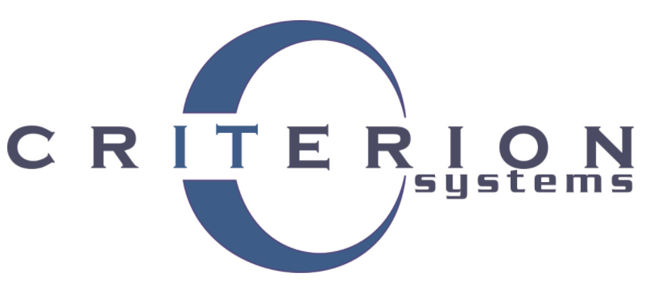

Ryan.Hall0203@gmail.com
I am a VMware Engineer
I have over 8 years of IT experience and I do my best to stay current in all things IT related. I am currently working as a VMware Administrator under contract with the USDA. I have two VCP certifications from VMware, I recently became a certified AWS Solutions Architect Associate, ITIL v4 Foundations certification and I have an active Public Trust clearance. I have worked in large, medium, and small environments so I am familiar with every kind of workload.I am currently learning how to become a full stack engineer, This page is my first attempt as a Web Developer.
References are available upon requests.
Work History
8+ Years of IT Experience

Criterion Systems
December 2019 - Present
Contractor for USDA responsible for System Lifecycle management for all equipment, including planning, implementation, maintenance, upgrades, consolidation, and decommissioning of enterprise hardware, and software. Responsible for the maintenance of 200+ ESXi hosts across multiple vCenters. I helped upgrade vCenters from vCenter 6.5 to 6.7. Have upgraded hosts from ESXi 6.5 to 6.7. Performed multiple vSphere security patches. Updated Firmware and drivers on Cisco UCS and Cisco Fabric Interconnects. Help maintain VMware Site Recovery Manager (SRM) for disaster recovery.
Cerner Corporation
May 2018 - December 2019
Performed daily operations tasks across storage, network, and systems to verify system integrity and availability. Implement monitoring for virtual infrastructure and servers, and respond to alarms in a timely manner, preventing client impact and performance degradation. In this role I helped Cerner to scale and transition the team. Deployed vCenter, PSC, VUM, vROM, NSX, VSAN, and ESXi 6.5/6.7 components and infrastructure. Perform administrator tasks on over 2000 ESXi hosts. Completed assigned incident management tasks, Deploy, setup, and maintain testing environments, Provided Tier III and other support per service request. Performed updates and maintenance on HPE servers.
Cerner Corporation
July 2015 - May 2018
Primary point of contact for the client and lead troubleshooting activities and resolving system interface issues on the HIE platform for data connections. Completed assigned incident management tasks, setup, maintain environments, provide Tier III and other support per service request. Performed various application installations and maintenance on backend and frontend systems (Windows/Linux).
YRC Worldwide
June 2013 - June 2015
Windows server administrator responsible for VMware Administration. Worked with DNS, DHCP, WSUS, the maintenance of VMware ESXi hosts, physical servers and virtual machines. Performed driver and firmware updates and server maintenance on HPE and Dell servers.
Tenney Pediatrics
October 2012 - December 2014
Part Time Windows Small Business Server and Network Administrator responsible for installation, maintenance, troubleshooting and support of Windows based desktop/server related network systems. Monitored and maintained Active Directory, DNS, DHCP, SQL Server and domains. Performed and managed backups.
Defense Logistics Agency San Joaquin
March 2008 - March 2011
Received, managed, stowed, inventoried, packed and shipped various materials around the world for various military and government agencies.